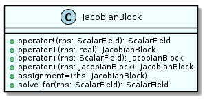
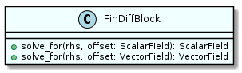
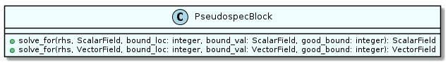

As described earlier, when integrating the ice shelf the nonlinear solver NITSOL (Pernice and Walker, 1998) was used. This is a legacy package written in FORTRAN77. ISOFT contains an explicit interface to the main NITSOL subroutine so that arguments can be checked by the compiler when it is invoked. NITSOL takes as an argument a subroutine which receives the current estimate of the state of the system and returns the corresponding residual according to equation 22 or 26, depending on whether solving for the ice thickness or velocity. The state of the system and the residual are both represented as 1-D arrays of real values. When the state array is received by the residual subroutine it is used to update the value of a field type (see the previous page). Operations are performed using the field type to calculate a residual field. A 1-D array containing the data of the residual field is then extracted and returned by the subroutine.
For NITSOL to converge it required a preconditioner which inverts the Jacobian operator (where is the differential operator in the -direction). NITSOL receives the preconditioner as an additional subroutine which takes as an argument an array to be preconditioned and returns the result of that preconditioning as an array. Similarly to the calculation of the residual, the preconditioner subroutine converts the array to a field type, performs the preconditioning, and then converts back to an array. As previously described, the operator can be inverted by solving a tridiagonal matrix approximating the Jacobian using finite-difference discretisation. A derived type called a jacobian_block (see below) was written to encapsulate this process, reinitialised every time a new value of is needed by the operator. This derived type is also able to represent two variations on the operator: , where is a scalar; and . In addition to inverting the operator on a field, jacobian_block objects can apply the forward operator to fields.



The plume is solved using the quasi-linearisation method (QLM). As the QLM is an obscure algorithm, a custom implementation was written in modern Fortran for ISOFT. It takes as arguments functions representing the linear and nonlinear portions of the nonlinear system of ODEs being solved. It also requires a function which computes the product of the Jacobian of the nonlinear operator with an arbitrary state vector and, optionally, a preconditioner function. All of these operate on and return arrays of real data. The QLM requires solving a linear system at each iteration and this is done using a slightly modified version of the GMRES implementation in NITSOL. The modification allows the GMRES solver to use an initial guess of the solution to the linear system, rather than assume a good initial guess to be zero (as made sense in the context of NITSOL). An explicit interface was written to this FORTRAN77 implementation, along with a wrapper which makes many of the arguments optional, automatically creates the necessary work arrays, and allows for less verbose definitions of the linear system.
Much as when solving for the state of the ice shelf, the linear and nonlinear plume operators take 1-D arrays of real values as arguments. They then use a method of the plume class to update the various fields representing the plume variables from this array. The necessary mathematics is performed using these fields and the results converted back to 1-D arrays which are then returned to the QLM solver. The preconditioner works by inverting the linear operator of the plume, taking the anti-derivative of each variable. A derived type called the pseudospec_block (see figure above) was written to apply this to field types, reversing the Chebyshev differentiation algorithm described on page . A similar derived type called fin_diff_block was also written which performs the same operation using a tridiagonal matrix representing a finite-difference approach to differentiation. However, the much greater accuracy and comparable computational cost of the pseudospec_block made it the better choice.
As previously mentioned, it was found that to get the level of accuracy needed for the plume solver to converge, the product of the Jacobian could not simply be evaluated using a finite difference approximation. Instead, the automatic differentiation feature of the field types described on the previous page was used. The vector to be multiplied by the Jacobian is used to provide derivative values for the plume variables. The nonlinear operator is then applied for the current plume state, with the overloaded operators of the field types applying the chain rule at each step to propagate the derivative. The derivative of the operator result will then be the product of the Jacobian and the initial vector.